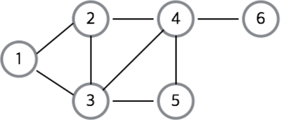
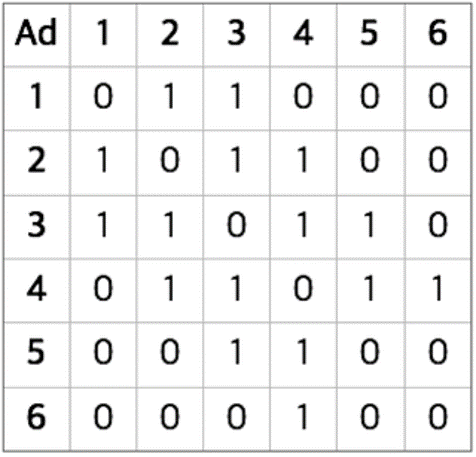
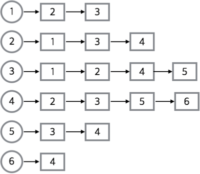

- 그래프란?
정점과 이를 연결하는 간선의 집합. 연결되어 있는 원소 간의 관계를 표현하는 비선형 자료구조.
ex) 버스 노선도, 도로망, 웹사이트 링크 등

G = (V, E)
(V: 정점의 집합, E = 간선의 집합)
- 구현 방법
1. 인접행렬 : NxN 행렬로 graph[i][j]가 true라면 정점 i 에서 정점 j 로의 간선이 있다는 것을 의미한다. n개의 정점에 대해 𝑛^2 크기의 2차원 배열을 생성한다. 배열의 인덱스만 알면 간선 유무를 알 수 있다. 그러나 메모리공간 낭비와 인접한 노드를 찾기 위해서는 모든 노드를 전부 순회해야 하는 문제가 있다.

2. 인접리스트 : 가장 일반적인 방법으로 각각의 정점에 인접한 정점들을 리스트로 표현한다. 정점의 번호만 알면 각 정점의 인접 정점들을 쉽게 찾을 수 있다. 정점 간 간선의 존재를 확인하기 위해 리스트의 처음부터 확인해야하는 단점이 있다.
